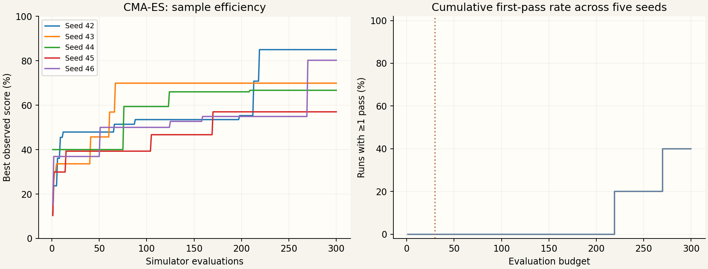
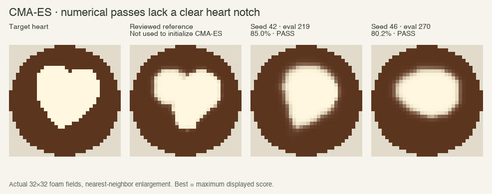
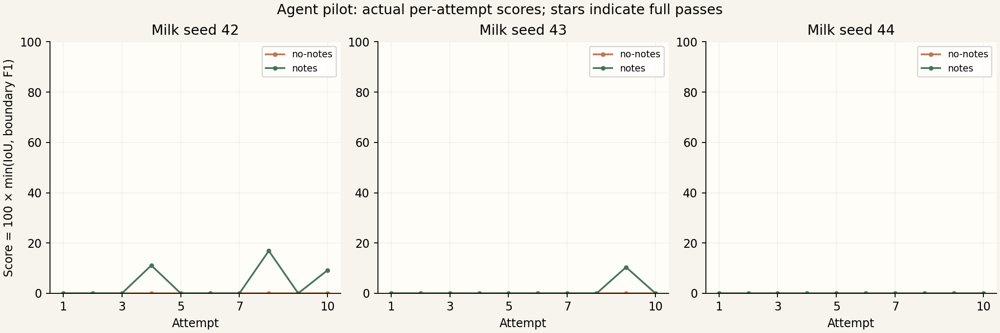
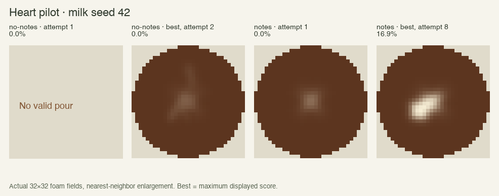
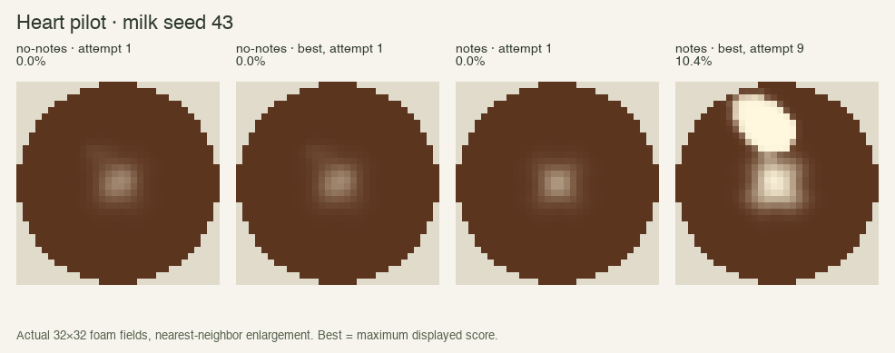
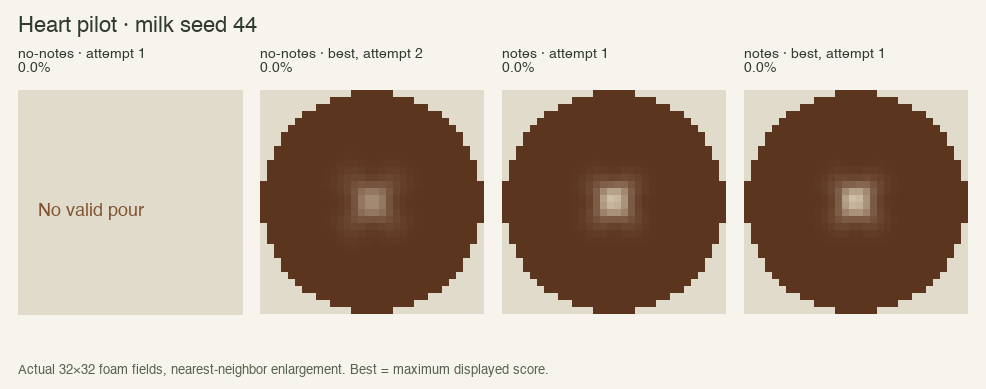

Frozen v0.5 scorer and foam-surface/3 · Heart only · 33 shared parameters · no threshold tuning
Heart only, target seed 42. CMA-ES starts from the generic INITIAL_PLAN, not a calibrated witness; sigma 0.23, population 8. Each candidate uses the next randomized milk episode. Seeds 42–46. One candidate = one counted simulator evaluation; no repeated evaluation or averaging. First-pass rate is the fraction of independent optimizer runs that have ever passed, not the fraction of pours passing.

| Seed | First pass / 300 | Passing evaluations | Best score |
|---|---|---|---|
| 42 | 219 | 1 | 85.0% |
| 43 | not reached | 0 | 69.9% |
| 44 | not reached | 0 | 66.7% |
| 45 | not reached | 0 | 57.0% |
| 46 | 270 | 1 | 80.2% |
Pass rate at budgets 10 / 30 / 100 / 200 / 250 / 300: 0% / 0% / 0% / 0% / 20% / 40%.

Visual caveat: Both numerical passes look like a rounded teardrop or blob, without a clear heart notch. The frozen contour gate still admits visually weak shapes. They count as numerical passes in all tables, not validated heart art. The scorer and thresholds were not changed during this pilot.
No pass occurred below 30 evaluations. The “too easy” warning is not triggered. There were only 2 passing pours out of 1,500; first pass does not establish robustness. Failed runs are right-censored at 300, not counted as passes at evaluation 301. Mean evaluations-to-pass across all seeds is not estimable from these censored results.
Model: gpt-4.1-mini. Seeds 42–44, ten attempts per mode and seed. The exact same milk schedules and 33-parameter bounds as CMA-ES. Each attempt gets a fresh planning call and a reflection call; no-notes discards its reflection, notes retains only its own previous note. No reference plan was supplied. Modes are interleaved, with order alternated each attempt.
Rejected plans score zero and count against the budget. Wrong-length arrays and physical values supplied in normalized coordinates are interface failures, so poor scores here cannot by themselves establish an inability to learn pouring. No prompt repairs or plan repairs were made during the pilot.
Gateway-side memory/routing is not independently verified. This is a context-notes comparison, not proof of weight learning. Missing/invalid model outputs consume attempts. Best observed scores may fail precision or serving checks; only full passes count.

| Mode | Seed | Attempts | Rejected | First pass | Best score | Total cost | Cost to first pass |
|---|---|---|---|---|---|---|---|
| no-notes | 42 | 10 | 5 | not reached | 0.0% | $0.01867 | not reached |
| notes | 42 | 10 | 6 | not reached | 16.9% | $0.02206 | not reached |
| no-notes | 43 | 10 | 3 | not reached | 0.0% | $0.02021 | not reached |
| notes | 43 | 10 | 4 | not reached | 10.4% | $0.02598 | not reached |
| no-notes | 44 | 10 | 4 | not reached | 0.0% | $0.01983 | not reached |
| notes | 44 | 10 | 3 | not reached | 0.0% | $0.02475 | not reached |
| Mode | Seed | 1 | 2 | 3 | 4 | 5 | 6 | 7 | 8 | 9 | 10 |
|---|---|---|---|---|---|---|---|---|---|---|---|
| no-notes | 42 | $0.00146 | $0.00216 | $0.00136 | $0.00243 | $0.00159 | $0.00239 | $0.00146 | $0.00214 | $0.00134 | $0.00234 |
| notes | 42 | $0.00231 | $0.00180 | $0.00181 | $0.00276 | $0.00205 | $0.00193 | $0.00188 | $0.00277 | $0.00192 | $0.00284 |
| no-notes | 43 | $0.00213 | $0.00142 | $0.00145 | $0.00241 | $0.00142 | $0.00256 | $0.00227 | $0.00220 | $0.00218 | $0.00218 |
| notes | 43 | $0.00231 | $0.00197 | $0.00190 | $0.00274 | $0.00304 | $0.00314 | $0.00321 | $0.00228 | $0.00305 | $0.00234 |
| no-notes | 44 | $0.00141 | $0.00252 | $0.00145 | $0.00139 | $0.00238 | $0.00226 | $0.00220 | $0.00240 | $0.00235 | $0.00148 |
| notes | 44 | $0.00217 | $0.00170 | $0.00192 | $0.00266 | $0.00198 | $0.00276 | $0.00292 | $0.00297 | $0.00291 | $0.00276 |
Spend ledger: 120 requests; recorded/estimated cost $0.13149; unresolved reservation $0.00000; cap $20. Cost basis: confirmed rates × token usage (uncached upper estimate). Applying the published cached-input rate gives $0.12600; the cap ledger conservatively uses the higher uncached estimate. Before dispatch, each request reserves an upper bound using UTF8 bytes plus framing allowance for input and the output-token limit. Unknown usage or provider errors stop dispatch; no automatic paid retries.
Billing contract: standard. Official model pricing. If cost is computed from tokens, it is an uncached upper estimate, not an invoice.



| Controller | Budget / seed | Seeds with a pass | First pass: 42 / 43 / 44 | Best score: 42 / 43 / 44 |
|---|---|---|---|---|
| optimizer | 10 | 0/3 | >10 / >10 / >10 | 45.5% / 33.6% / 40.0% |
| no-notes | 10 | 0/3 | >10 / >10 / >10 | 0.0% / 0.0% / 0.0% |
| notes | 10 | 0/3 | >10 / >10 / >10 | 16.9% / 10.4% / 0.0% |
Compare all controllers at ten attempts on seeds 42–44. The optimizer's full 300-evaluation runs answer the separate sample-efficiency question; they are not presented as an equal-budget win over ten-attempt agents. A small pilot cannot establish population-level superiority.
The current tulip witness matches a fused silhouette, so it provides no evidence of separated layers. Earlier local recipe trials showed neighbouring pools merging under radial spreading. Small disconnected deposits are possible in this simulator, so separated layers are not proven impossible; a recognisable layered tulip at the required scale and volume has not been demonstrated with the current 33-parameter plan. No target or simulation changes were made for this pilot.
Machine-readable summary. Full plans, foam maps, scores and local cost ledger: results/heart-pilot/ in the repository.